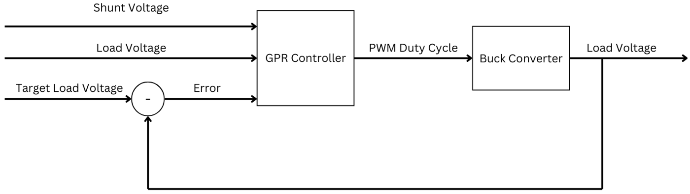
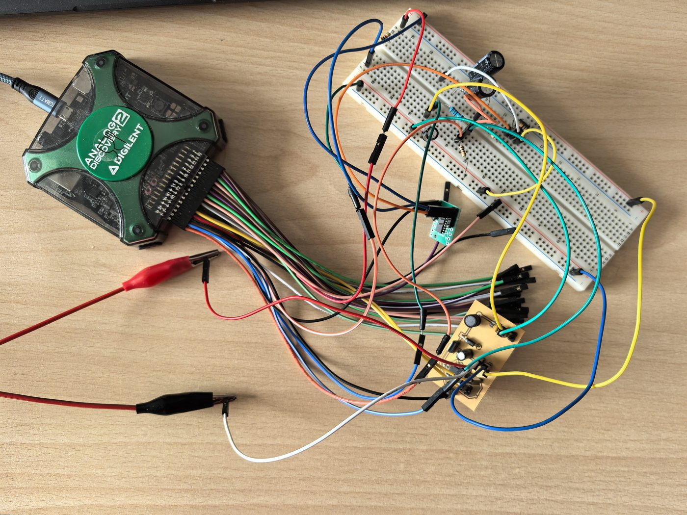
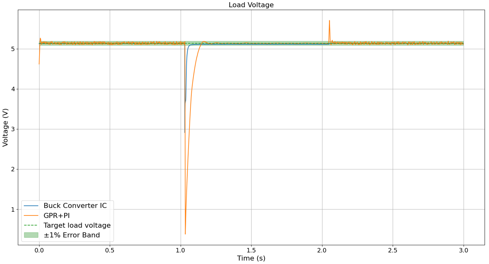

Fragestellung
Abwärtswandler setzen eine höhere Spannung auf eine niedrigere herab und werden üblicherweise von schnellen analogen Regelschaltungen geregelt. Ein Lastwechsel mit kapazitiver (RC-)Last bleibt dennoch schwierig, weil die sich aufladenden Kondensatoren einen Einschwingvorgang verursachen, der die Regelung verlangsamt.
Meine Arbeit untersuchte, ob ein datengetriebener Regler auf Basis von Gaußprozess-Regression (GPR) die Ausgangsspannung bei einem solchen Lastwechsel halten kann und wie er im Vergleich zu einem herkömmlichen Wandler-IC (Texas Instruments TPS629210) abschneidet.

Hardware
- Entwurf eines asynchronen Abwärtswandlers (100 kHz Schaltfrequenz, MOSFET AOI4286, Schottky-Diode 1N5817). Nach einem Prototyp auf Lochraster habe ich eine Leiterplatte in KiCad entworfen, die bei RF-Frontend gefertigt wurde.
- Hochfrequentes Rauschen am Ausgang auf Spannungsspitzen im PWM-Signal zurückgeführt und durch eine zusätzliche Komparatorstufe beseitigt.
- Eine Masseschleife (5,48 V zwischen Mess- und Versorgungsmasse) erkannt und mit einem Optokoppler behoben.
- Schaltbare Testlast aufgebaut: 1 kΩ Grundlast plus RC-Last (470 Ω ∥ 2 × 1 mF), zugeschaltet über einen MOSFET, mit Shunt-Widerstand zur Strommessung.


Software & maschinelles Lernen
- Python-Modul für den Analog Discovery 2 (WaveForms SDK) entwickelt, das das PWM-Signal erzeugt, Spannungen misst und die Testlast schaltet.
- Gepufferte Mittelwertmessung (500 Abtastwerte) statt Einzelmessung gewählt: Das Rauschen sank von 115 mV auf 25 mV (Standardabweichung), bei 0,76 ms statt 0,18 ms Latenz.
- Datensatz mit je 475 Trainings- und Testbeispielen aufgenommen, mit zufälligen Tastverhältnissen und Lastwiderständen von 220 Ω bis 1 kΩ.
- GPR-Modelle mit scikit-learn trainiert, Hyperparameter per Bayes'scher Optimierung abgestimmt und vier Kernel verglichen. Der Matérn-Kernel lieferte das beste Ergebnis (R² 0,991, MAE 2,18 Prozentpunkte Tastverhältnis).
- Drei Reglervarianten entwickelt: einfacher GPR-Regler, eine Variante mit maximalem Tastverhältnis während des anfänglichen Spannungseinbruchs und ein GPR- + PI-Regler mit Anti-Windup, der die verbleibende stationäre Regelabweichung beseitigt.
Ergebnisse

- Genauigkeit: Beide Regler hielten die Lastspannung innerhalb von 1 % des Sollwerts. Nach dem Zuschalten der RC-Last hatte der GPR+PI-Regler eine geringere stationäre Abweichung als das IC (4–17 mV vs. 22–27 mV MAE).
- Geschwindigkeit: Der GPR-Regler schwang in 108 ms ein, das IC in 36 ms. Ursache ist die Regelkreisperiode von 2,19 ms (0,7 ms Messen, 0,7 ms Berechnen, 0,8 ms PWM-Aktualisierung), überwiegend durch USB- und SDK-Overhead.
- Die Analyse zeigt, dass ein etwa 3-mal schnellerer Regelkreis (≈0,73 ms) mit dem IC mithalten sollte. Ohne diese Latenzen ist der Ansatz also konkurrenzfähig.
Ausblick
Der naheliegende nächste Schritt ist, den Regler auf einem Mikrocontroller wie einem STM32 auszuführen: Das GPR-Modell wird offline trainiert, auf das Gerät übertragen, und Messung sowie PWM-Erzeugung laufen direkt auf dem Chip, ohne USB-Latenz. Weitere Ideen sind, dem Modell einen Verlauf vergangener Messwerte zu geben, damit es das Einschwingverhalten lernt, sowie identische Schaltungstopologien für einen faireren Vergleich.